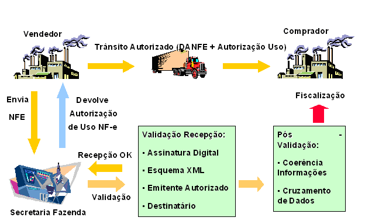
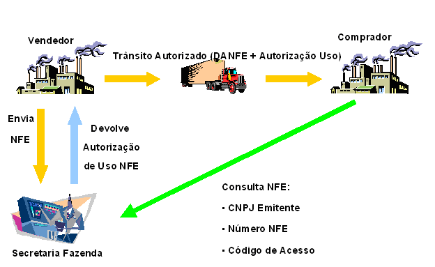

Entende-se por Nota Fiscal Eletrônica (NF-e) como
sendo um documento de existência exclusivamente digital,
emitido e
armazenado eletronicamente, com intuito de documentar uma
operação de
circulação de mercadoria ou
prestação de serviço, ocorrida entre
as
partes, cuja validade jurídica é garantida pela
assinatura digital do
emitente e recepção, pelo fisco, antes da
ocorrência do fato gerador.
IMPORTANTE:
Para fins de simplificação, o Software Emissor
NF-e chama de "NF-e" ou
"Nota Fiscal eletrônica" todo o documento gerado por ele que
poderá, em
algum momento, vir a ser assinado, transmitido e autorizado pela SEFAZ.
Assim,
mesmo que uma NF-e na situação "Em
digitação" ou "Assinada"
não seja uma Nota Fiscal
eletrônica pelo conceito vigente (pois este documento
não foi assinado
e não foi autorizado pela SEFAZ), o Software faz o uso deste
nome para
facilitar o entendimento do usuário.
A Nota Fiscal Eletrônica proposta possuirá as
seguintes características:
Documento digital, que atende
aos padrões definidos na MP 2.200/01, no formato XML
(Extended Markup Language);
Garantia de autoria,
integridade e irrefutabilidade, certificadas
através de assinatura digital do emitente, definido pela
Infra-estrutura de Chaves Públicas Brasileiras (ICP Brasil);
O arquivo da NF-e
deverá seguir o leiaute de campos definido em
legislação específica;
A NF-e, para poder ser
válida, deverá ser enviada
eletronicamente e autorizada pelo fisco, da
circunscrição do
contribuinte emissor, antes de seu envio ao destinatário e
antes da
saída da mercadoria do estabelecimento;
A transmissão da
NF-e será efetivada, via Internet, por meio de protocolo de
segurança ou criptografia;
As NF-e deverão ser
emitidas em ordem consecutiva crescente e sem
intervalos a partir do 1º número
seqüencial, sendo vedado a duplicidade
ou re-aproveitamento dos números inutilizados ou cancelados;
Modelo Operacional
De
maneira simplificada, a empresa emissora de NF-e gerará um
arquivo
eletrônico contendo as informações
fiscais da operação comercial, o
qual deverá ser assinado digitalmente, de maneira a garantir
a
integridade dos dados e a autoria do emissor. Este arquivo
eletrônico,
que corresponderá à Nota Fiscal
Eletrônica (NF-e), será então
transmitido pela Internet para a Secretaria da Fazenda de
jurisdição do
contribuinte que fará uma
pré-validação do arquivo e
devolverá um
protocolo de recebimento (Autorização de Uso),
sem o qual não poderá
haver o trânsito da mercadoria.
A NF-e também será transmitida
para a Receita Federal, que será repositório
nacional de todas as NF-e
emitidas (Ambiente Nacional) e, no caso de
operação interestadual, para
a Secretaria de Fazenda de destino da operação e
Suframa, no caso de
mercadorias destinadas às áreas incentivadas.
As Secretarias
de Fazenda e a RFB (Ambiente Nacional), disponibilizarão
consulta,
através Internet, para o destinatário e outros
legítimos interessados,
que detenham a chave de acesso do documento eletrônico.
Para
acompanhar o trânsito da mercadoria será impressa
uma representação
gráfica simplificada da Nota Fiscal Eletrônica,
intitulado DANFE
(Documento Auxiliar da Nota Fiscal Eletrônica), em papel
comum, em
única via, que conterá impressa, em destaque, a
chave de acesso para
consulta da NF-e na Internet e um código de barras
que
facilitará a captura e a confirmação
de informações da NF-e pelas
unidades fiscais.
O DANFE não é uma nota fiscal, nem substitui
uma nota fiscal, servindo apenas como instrumento auxiliar para
consulta da NF-e, pois contém a chave de acesso da NF-e, que
permite ao
detentor desse documento confirmar a efetiva existência da
NF-e
através do Ambiente Nacional (RFB) ou site da SEFAZ na
Internet.
O
contribuinte destinatário, não emissor de NF-e,
poderá escriturar os
dados contidos no DANFE para a escrituração da
NF-e, sendo que sua
validade ficará vinculada à efetiva
existência da NF-e nos arquivos das
administrações tributárias envolvidas
no processo, comprovada através
da emissão da Autorização de Uso.
O contribuinte emitente da NF-e, realizará a
escrituração a partir das NF-e emitidas e
recebidas.
Detalhamento
das Etapas do Modelo Operacional
O processo de emissão da Nota Fiscal Eletrônica
(NF-e) será constituído das seguintes etapas:
Etapa 1 -
Habilitação do contribuinte como emissor de NF-e;
Etapa 2 -
Emissão e Transmissão da NF-e;
Etapa 3 - Consulta
da NF-e;
Etapa
1 - Habilitação do Contribuinte como
Emissor de NF-e
Esta
etapa corresponde ao processo eletrônico pelo qual um
contribuinte
solicita seu cadastramento como emissor de NF-e junto a Secretaria da
Fazenda.
Cumprida, esta etapa inicial
de cadastramento, o contribuinte deverá iniciar o envio de
suas Notas
Fiscais Eletrônicas para a Secretaria da
Fazenda.
Etapa
2 - Emissão e Transmissão da NF-e
Esta
etapa descreve o processo de emissão e
transmissão de uma Nota Fiscal
Eletrônica, pelo contribuinte emissor, para a Secretaria de
Fazenda,
que após sua autorização de uso,
transmitirá o documento eletrônico
para a Secretaria da Receita Federal e Sefaz de destino, no caso de
operações interestaduais, permitindo assim o
trânsito da mercadoria.
Nesta
etapa, o contribuinte deverá, após dispor dos
dados da operação comercial, preencher
os campos do arquivo
da Nota Fiscal Eletrônica.
De posse do arquivo de NF-e, e após efetuar
validações quanto ao correto preenchimento de
seus campos, o
contribuinte deverá proceder a assinatura digital do
arquivo, através
do padrão ICP-Brasil.
Este arquivo, já com a assinatura digital,
deverá ser transmitido, pela Internet, para a Secretaria da
Fazenda, previamente a ocorrência do
fato gerador, ou seja, antes da saída da mercadoria de seu
estabelecimento.
A transmissão de dados utilizará protocolo de
segurança e/ou criptografia, visando a
proteção e sigilo da
informação.
A
Secretaria da Fazenda, ao receber a NF-e pela Internet,
realizará
automaticamente uma validação de
recepção, momento no qual serão
avaliados eletronicamente os seguintes aspectos:
emissor autorizado;
assinatura digital do emitente;
Integridade (hash
code);
formato dos campos do arquivo
(esquema XML);
regularidade fiscal do
emitente;
não
existência da NF-e na base de dados da Secretaria da Fazenda
(duplicidade);
Se
não for detectado nenhum problema na etapa da
validação de recepção, a
NF-e será recebida e armazenada pela SEFAZ que,
simultaneamente,
retornará com um protocolo de
transação com status
"Autorização de Uso"
e disponibilizará a NF-e, para consulta pela Internet, pelas
partes
envolvidas (emitente e destinatário) e aos terceiros
legitimamente
interessados (aqueles que dispuserem da chave de acesso da NF-e).
Somente após o
contribuinte emissor receber o protocolo de
transação com o status
"Autorização de Uso"
é que poderá haver a saída da
mercadoria de seu
estabelecimento, podendo ainda ser feita a transmissão da
NF-e
autorizada, por qualquer meio, inclusive correio eletrônico,
ao
destinatário.
Para facilitar o controle, o trânsito da
mercadoria com uma NF-e autorizada, deverá ser feito
acompanhado de um
documento auxiliar, impresso em papel comum, intitulado DANFE
(Documento Auxiliar da Nota Fiscal Eletrônica).
O DANFE não é
uma nota fiscal, nem substitui uma nota fiscal, servindo apenas como
instrumento auxiliar para consulta da NF-e por conter impresso a chave
de acesso da NF-e, permitindo assim que a validade da
operação e da
NF-e seja confirmada, pelo detentor deste documento auxiliar,
através
do site da SEFAZ na Internet. Apesar disto, no primeiro
momento de
implantação do projeto, o contribuinte
destinatário, não emissor de
NF-e, poderá escriturar este documento, sendo que sua
validade fica
vinculada a efetiva existência da NF-e nos arquivos das
administrações
tributárias envolvidas no processo.
O DANFE, conterá código de barras unidimensional
(padrão CODE 128C, contendo o número da chave
única da NF-e).
Uma
NF-e recebida pela SEFAZ representa, simplesmente, que a
declaração de
uma transação comercial feita pelo contribuinte
emitente do documento
foi aceita em termos de formato pela SEFAZ, que a partir deste momento
poderá proceder a homologação do
lançamento da NF-e, conforme
legislação em vigor.
Se houver algum problema já na
validação de
recepção, poderão ocorrer
três situações distintas:
interrupção da
comunicação, sem um protocolo de
transação em resposta da SEFAZ;
resposta da SEFAZ com protocolo de transação com
status "Rejeição" e
resposta da SEFAZ com protocolo de transação com
status "Não
Autorização de Uso".
A primeira hipótese, de interrupção da
comunicação, sem um protocolo de
transação em resposta da SEFAZ,
ocorrerá quando, por algum problema de ordem
técnica na comunicação de
dados, não for possível a
recepção do arquivo pela SEFAZ. Neste caso, o
contribuinte deverá proceder a um novo envio da NF-e para a
SEFAZ.
Já
a segunda hipótese, corresponde a
situação de rejeição da
NF-e, devido
a problemas, detectados pela SEFAZ, na validação
de recepção, como:
assinatura digital inválida, não preenchimento ou
preenchimento
inválido do número da NF-e, existência
da NF-e na base de dados da
SEFAZ, etc. Neste caso, o arquivo de NF-e, que foi rejeitado pela
SEFAZ, não será armazenado na base de consultas
da SEFAZ, podendo o
contribuinte corrigir o problema e enviar novamente o arquivo para a
SEFAZ.
O protocolo de transação, com status
"Rejeição",
conterá,
além da identificação do status, a
identificação do motivo da
rejeição
da NF-e.
A última hipótese corresponde a
situação onde a NF-e
não teve seu uso autorizado pela SEFAZ. Este caso
ocorrerá quando
houver qualquer problemas com a regularidade fiscal do emissor ou
destinatário.
Na hipótese da não
autorização de
uso, a NF-e é armazenada para consulta na base de dados da
SEFAZ com
este status, não podendo este mesmo número de
NF-e ser utilizado
novamente pelo contribuinte emissor. Da mesma forma, o contribuinte
emissor não poderá realizar a saída da
mercadoria acobertada por uma
NF-e cuja status seja "Não Autorizado
Uso".

Figura 1 - Emissão e Transmissão de NF-e
Etapa 3 - Consulta da NF-e
A
existência de uma NF-e e sua validade poderão ser
verificadas através
de uma consulta no site da Secretaria de Fazenda da Unidade da
Federação de origem do emitente da NF-e ou
através do Portal Nacional
da NF-e, a partir da informação da chave de
acesso da NF-e.
A
chave de acesso da NF-e , que consta impressa no DANFE, é
composta
pelas seguintes informações: código da
UF do emitente da NF-e, ano e
mês de emissão, CNPJ do emissor; modelo do
documento fiscal, série,
número da NF-e e código numérico que
compões a chave de acesso.
O
código de acesso é uma
seqüência de 10 posições
numéricas, geradas pelo
emissor da NF-e, no momento de sua emissão e que tem como
objetivo
tornar menos previsível a construção
da chave de acesso da NF-e.
O
resultado da consulta da NF-e no site da SEFAZ ou Portal Nacional,
disponibilizará todas as informações
contidas no arquivo XML por um
prazo de 180 dias. Após este período a
consulta será mais restrita.

Figura 2 - Consulta NF-e pela Internet
Casos Particulares:
Cancelamento de NF-e
Após
ter sido recebida pela SEFAZ, uma NF-e poderá ser objeto de
cancelamento por pedido do emitente.
Somente poderá ser
cancelada uma NF-e que tenha sido previamente autorizado o seu uso pelo
Fisco (protocolo "Autorização de
Uso") e que não tenha ainda ocorrido o
fato gerador, ou seja a saída da mercadoria do
estabelecimento.
Além
disso, uma NF-e somente poderá ser cancelada durante um
determinado
período de tempo, estabelecido pela
legislação, após sua
emissão e
recepção pela SEFAZ.
Para o cancelamento de uma NF-e, o emissor
deverá comunicar-se com a SEFAZ, enviando
uma mensagem no formato XML (extensible markup language), com
assinatura digital, solicitando o cancelamento de uma NF-e e
identificando-a através da informação
de sua respectiva chave de acesso.
Se
não houver restrição quanto ao pedido
de cancelamento, a SEFAZ
responderá ao contribuinte através de protocolo
de transação com status
"Cancelamento de NF-e".
Ao se realizar uma consulta desta NF-e no site da SEFAZ, a mesma
resultará com informação quanto ao seu
cancelamento.
Consulta
Status de NF-e
O emissor de NF-e terá a sua
disposição, um serviço de consulta ao
status de uma NF-e.
O objetivo deste serviço é permitir ao emissor
certificar-se da situação de uma NF-e que tenha
emitido e enviado para a SEFAZ.
Esta
consulta será feita através do envio para a SEFAZ
de uma mensagem no
formato XML, solicitando o status de uma NF-e, informando sua
correspondente chave de acesso.
A SEFAZ responderá a consulta
por intermédio de protocolo de
transação, identificando a NF-e por sua
chave de acesso e trazendo o histórico de status desta NF-e
com o
correspondente momento de registro (data/hora/minuto/segundo) na base
de dados da SEFAZ.